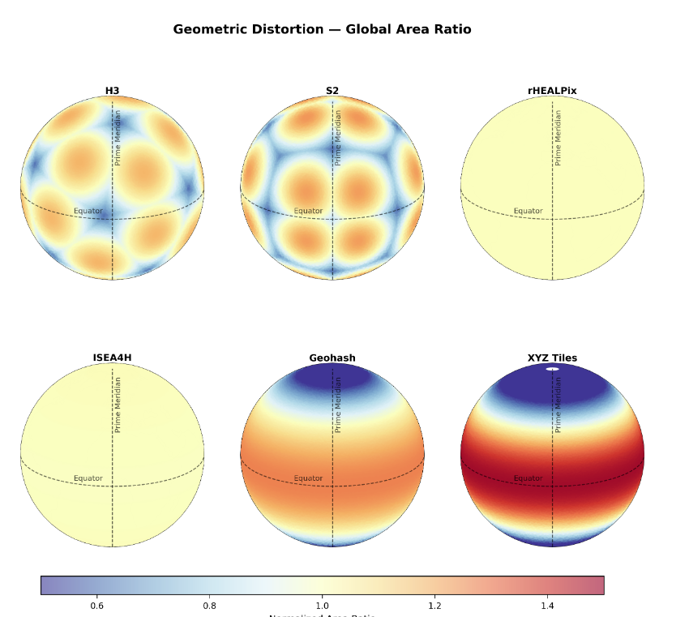

Part II
The Data Pillar:
Discrete Global Grid Systems
Under Review (ACM TSAS)
How Do Discrete Global Grid Systems Actually Perform? A Systematic Benchmark Across Geometry, Computation and Relational Joins
Levente Juhász
eartharxiv.org/repository/view/12855/
Today: introducing dggs-bench and evaluating 6 grids across 4 experiment families.
The Planar Fallacy in Global GeoAI
Tying AI architectures to flat 2D representations introduces critical geographic biases.
📐 Spatial Sampling Bias
Every flat map distorts the sphere. Planar grids drastically oversample polar regions while undersampling the equator, feeding biased training data to the model.
🌐 Fallacy of Planar Adjacency
Flat representations force hard boundaries (e.g., ±180° longitude). Models must learn artificial "wraparound" corrections for a problem that simply doesn't exist on a sphere.
A Technical Legacy, Not a Scientific Truth
Our reliance on 2D planar maps is an artifact of historical constraints, not geographic accuracy.
The Analog Era Constraints
- Maps had to be printed on flat sheets of paper.
- Cartesian coordinates (X, Y) were mathematically simpler to calculate by hand than spherical trigonometry.
- These analog constraints were hard-coded into early GIS architectures in the 1960s.
The Opportunity for GeoAI
Machine learning models do not need paper maps. They do not require math to be optimized for human calculation.
We finally have the computational capability to abandon the planar fallacy and rebuild spatial reasoning on a scientifically rigorous foundation.
Empirical Evidence: The DGGS Advantage
Emerging literature demonstrates significant improvements in global GeoAI modeling.
1. Statistical GeoAI (Random Forests)
Drivers of global irrigation expansion: the role of discrete global grid choice
Wagner, S., Stenzel, F., Krueger, T., & de Wiljes, J. (2024). Hydrology and Earth System Sciences (HESS).
- 28% reduction in global NRMSE (irrigation modeling) using an ISEA3H geodesic grid compared to a 0.5° grid.
- Unbiased sampling: Eliminates high-latitude oversampling, yielding simulated spatial patterns that match observed data perfectly.
2. Deep Learning (HexCNNs)
Hexagonal discrete global grid system enhances model latitudinal spatial generalization and deep learning capabilities
Li, K., & Wang, J. (2026). Big Earth Data.
- Up to 14.1% error reduction at the poles (80°–90°) for surface parameter inversion.
- Topology advantage: Native HexCNN kernel requires only 7 parameters (vs 9 in standard 3×3 CNNs) while significantly mitigating cross-latitudinal overfitting.
From Platonic Solids to the Sphere
The choice of base solid determines the core design trade-off.

Icosahedra minimize distortion. Cubes maximize computational regularity. HEALPix maximizes equal-area.
Six DGGS Implementations
We benchmarked 6 grids across 4 experiment families.

Benchmarking Geometric Distortion
Comparing areal and angular preservation across the 6 implementations.
Global Area Ratio (Areal)

Angular Deviation (Isotropy)

Relational Throughput & The Encoding Tax
Join-by-index provides massive speedups, but calculating coverings incurs an initial cost.
⚡ Join Speedup
Pre-computed DGGS joins achieve massive speedups over traditional vector ST_Intersects (e.g., S2 achieves up to 325× speedup).
⏳ The Encoding Tax
Extracting, Transforming, and Loading (ETL) raw vector data into DGGS coverings is highly intensive. It currently represents the primary computational bottleneck for DGGS pipelines.

Execution time on log scale (includes Geohash)
Juhász, L., et al. (2025). A Comparative Benchmark of Discrete Global Grid Systems for Geospatial AI.
Why Invest in DGGS? The Core Benefits
Discrete Global Grid Systems offer a radically different paradigm for spatial reasoning.
1. Scientific Rigor
They can be true equal-area across the globe, completely eliminating spatial sampling bias.
2. Structural Hierarchy
Multi-resolution hierarchy allows seamless scaling from local streets to planetary phenomena.
3. Persistence
Cells are spatially and temporally persistent, acting as static bins for time-series modeling.
4. Computational Speed
Transforms complex geometric spatial joins into ultra-fast 1D relational hash joins.
The Industry Signal
Technology giants traditionally outside the "geospatial" domain are investing heavily in this infrastructure:
- Uber created H3 to manage dynamic global logistics.
- Google created S2 to power planetary-scale indexing.
They invest heavily for a reason. It's time for GIScience to rigorously evaluate how we can leverage this native AI architecture.